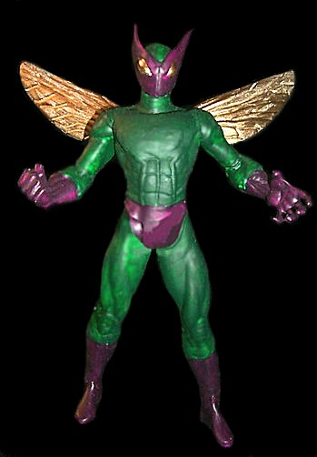
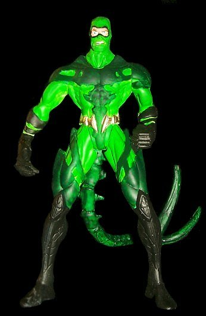

Rod MastersNew Customs*: |
Rod MastersNew Customs*: |
*Due to some unfortunate technical difficulties, Rod Masters' Baron Zemo I, Constrictor, and Yellowjacket II were not able to be presented for this show. Pictures of these figures will be shown soon.
BeetleRecipe: Comments: |
 |
|
 |
ScorpionRecipe: Comments: |